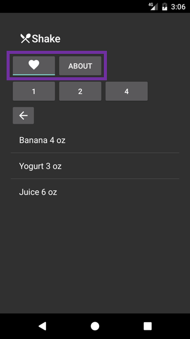
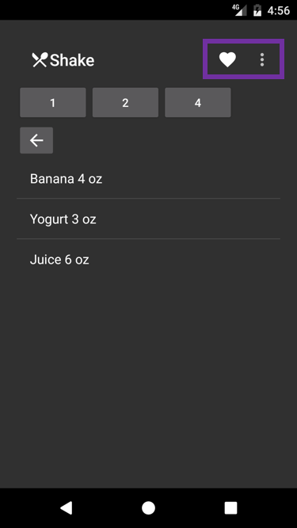

Duration
15 minutes
Goals
The primary goal of this lab is to use XML to define the entries in a Toolbar's Actions menu. The image below shows the current state of the Recipes app after the completion of Exercise 1. In this exercise, your goal is to work on the highlighted area.
You will use an XML menu file to define menu items for the "favorite" and "about" actions. These actions will then appear inside the toolbar so you will be able to remove the buttons used in the current implementation. When you are done, the app should look like the image below - the "favorite" action is shown in the toolbar while the "about" action is hidden inside the toolbar's overflow area.
Required assets
This is a continuation of the previous exercise. You can use your existing solution or open the solution in the Exercise 1/Completed folder. The Exercise 2 folder contains a subfolder named Completed with a solution you can use to check your work. Please make sure you have these folders before you begin.
Challenge
- Create a new sub-folder named menu inside your app's Resources folder.
- Create a new XML file named actions.xml inside the menu folder.
- Populate the actions.xml file with an Android menu containing two items: one for "favorite" that will always be shown on the menu and one for "about" that will appear only in the overflow area.
- Inflate the menu from code.
- Respond to menu-item click events. For the "favorite" action you should toggle the current recipe's
IsFavoriteproperty and update the image on the menu item to match. For the "about" action you should navigate the app to the AboutActivity. - Remove the previous implementation of "favorite" and "about" (the XML for the buttons and the corresponding code).
Steps
Define the menu file
- Create a new sub-folder named menu inside your app's Resources folder.
- Create a new XML file named actions.xml inside the menu folder.
-
Add the following XML to the actions.xml file. Notice how it defines two actions:
one for "favorite" that will appear on the toolbar and one for "about" that will be in the overflow
area. Also, note that the items are given ids so they can be identified from code.
<?xml version="1.0" encoding="utf-8"?> <menu xmlns:android="http://schemas.android.com/apk/res/android" xmlns:app ="http://schemas.android.com/apk/res-auto"> <item android:id ="@+id/addToFavorites" android:title ="Add to Favorites" app:showAsAction="always" /> <item android:id ="@+id/about" android:title ="About" app:showAsAction="never" /> </menu>
Inflate the toolbar items
- Open DetailsActivity.cs.
-
Call the
InflateMenumethod on the toolbar to populate its Actions menu - passResource.Menu.actionsas the parameter. The code is shown below.
Handle menu click
-
Subscribe to the toolbar's
MenuItemClickevent.toolbar.MenuItemClick += OnMenuItemClick;
The required method signature is shown below.void OnMenuItemClick(object sender, Android.Support.V7.Widget.Toolbar.MenuItemClickEventArgs e) { } -
In your handler, add a
switchstatement that tests the value of the parametere.Item.ItemId. This will be the id of the menu items defined in the XML file. -
Add a case for
Resource.Id.addToFavoritesto theswitchstatement. Inside this case you should toggle the value of the current recipe'sIsFavoriteproperty and then update the image to reflect the new favorite status (you can use the existingSetFavoriteDrawablemethod to load the new image). -
Replace the
SetFavoriteDrawablemethod with the following implementation. This change is needed because we are now swapping the image on a menu item instead of a toggle button.void SetFavoriteDrawable(bool isFavorite) { if (isFavorite) toolbar.Menu.FindItem(Resource.Id.addToFavorites).SetIcon(Resource.Drawable.ic_favorite_white_24dp); // filled in 'heart' image else toolbar.Menu.FindItem(Resource.Id.addToFavorites).SetIcon(Resource.Drawable.ic_favorite_border_white_24dp); // 'heart' image border only } -
Add a case for
Resource.Id.aboutto theswitchstatement. Inside this case you should launch the AboutActivity. The code for the completed click handler is given below.
Remove unneeded code
- Open Details.axml.
-
Remove the nested
LinearLayoutthat defines the "favorite"ToggleButtonand the "about"Button. - Open DetailsActivity.cs.
-
Remove all the code dealing with the "favorite"
ToggleButton(i.e. theCheckedChangeevent subscription and theOnFavoriteCheckedChangehandler).// subscription var toggle = FindViewById<ToggleButton>(Resource.Id.favoriteButton); toggle.CheckedChange += OnFavoriteCheckedChange; // handler void OnFavoriteCheckedChange(object sender, CompoundButton.CheckedChangeEventArgs e) { recipe.IsFavorite = e.IsChecked; // update the recipe's state SetFavoriteDrawable(e.IsChecked); // toggle the image used on the button } -
Remove the entire line of code that handles the "about" button's
Clickevent:FindViewById<Button>(Resource.Id.aboutButton).Click += (sender, e) => StartActivity(typeof(AboutActivity));
Summary
This exercise asked you to use an XML file to define the entries for a toolbar's Actions menu. We used the standard Android menu-file format so the techniques you learned here can be applied to other Android menus as well.